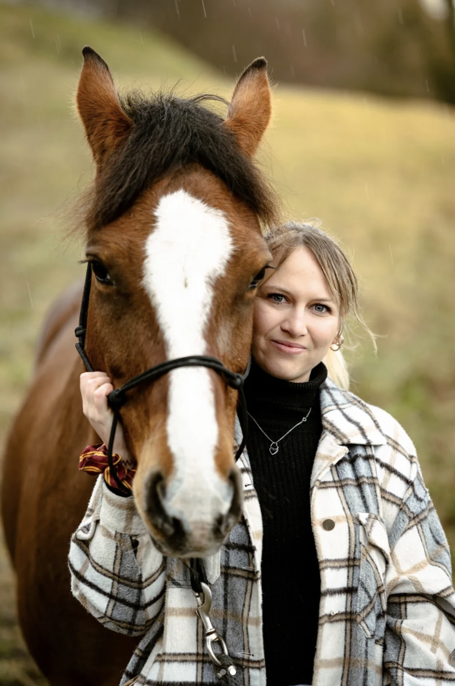

jho
Artiste peintre
Paris — depuis 2012
Galerie

jho peint le réel comme on l'observe longuement — animaux, paysages, portraits — jusqu'à ce qu'une vibration paisible se dégage de la surface. Chaque toile est un temps long, fait de couches, de glacis et d'attente.
votre peinture personnaliser